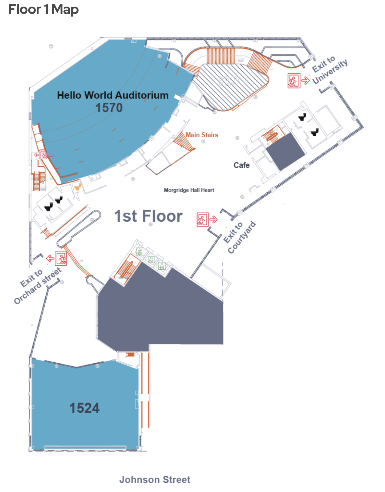

ONE BUILDING. EVERY STEP OF THE JOURNEY.
The way that works for you.
Explore Morgridge Hall, with directions that adapt to your access needs.
READY WHEN YOU ARE
Enter through the automatic doors.
Follow the entrance ramp to the elevator lobby.
Compare with the supplied floor plan
Selected-floor screenshot supplied by you. The 3D model is an approximate reconstruction.

UW accessibility reference · Reference-based demonstration, not a real navigation service. Scale, heights and detailed circulation are approximate; no on-site survey. Voice uses your browser’s speech engine. The POV shows camera height and guidance; it does not simulate blindness. No live GPS, camera detection, facility feed or medical data.
THE EVERYDAY EXPERIENCE
Less screen. More confidence.
A destination, clear instructions, and help when the route stops working.
Where to?
Enter through the automatic doors.
Simulated positioningAudio is controlled in Building demo. Use your usual mobility aids and verified surroundings.
YOUR ROUTE, AT A GLANCE
Orchard Street entrance → Commons & Library
A production app would use indoor positioning and accessible touch, voice and haptic controls. This prototype animates location and supports browser speech; haptics and real positioning are future work.